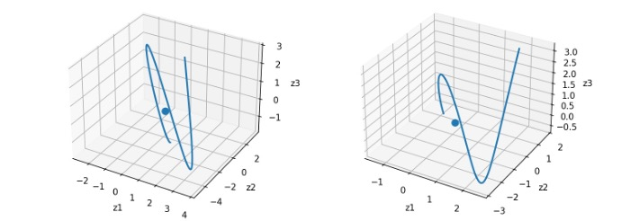

Abstract: This research bridges spatial design theory and computer vision to quantify the hidden geometric patterns that influence human perceptions of landscape beauty. By translating qualitative design principles into measurable image features, the framework aims to improve scenicness prediction models and condition generative AI architectures to produce more visually coherent landscapes. The findings will support future applications in urban planning, environmental design, and interpretable AI systems.

Abstract: This research presents a brain-inspired robotic learning framework that integrates neural population dynamics and hierarchical control to improve robotic adaptability in dynamic environments. By decoding large-scale biological neural datasets into temporal dynamical models, the project translates sensorimotor principles into a robust, three-layer architecture for autonomous manipulation and navigation. Ultimately, this work establishes a computational bridge between neuroscience and real-world embodied intelligence.